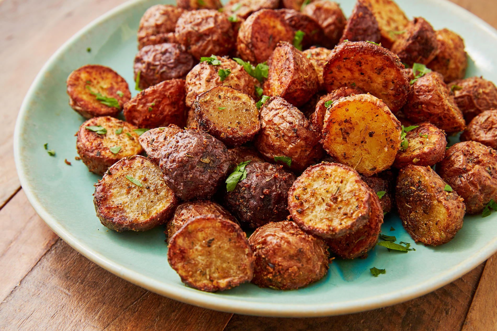

Air Fryer One-Bite Potatoes

Description
Air-fried roasted one-bite potatoes that are crispy on the outside and creamy on the inside. This recipe is fast simple and delicious. Great for anybody who doesnt have much time to cooks but still wants a great side for any dish.
Ingredients
- 1/2 pound mini potatoes
- 2 teaspoons extra-virgin olive oil
- 2 teaspoons dry Italian-style salad dressing mix
- Salt and ground black pepper to taste
Steps
- Preheat the air fryer to 400 degrees F.
- Wash and dry potatoes. Trim edges to make a flat surface on both ends.
- Combine extra-virgin olive oil and salad dressing mix in a large bowl. Add potatoes and toss until potatoes are well coated.
- Place potatoes in a single layer on the air fryer tray
- Air fry until potatoes are golden brown (5-7 minutes).
- Flip potatoes and air fry for an additional 2 to 3 minutes.
- Season with salt and pepper to taste.
- Enjoy!